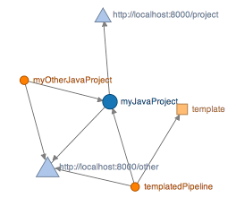
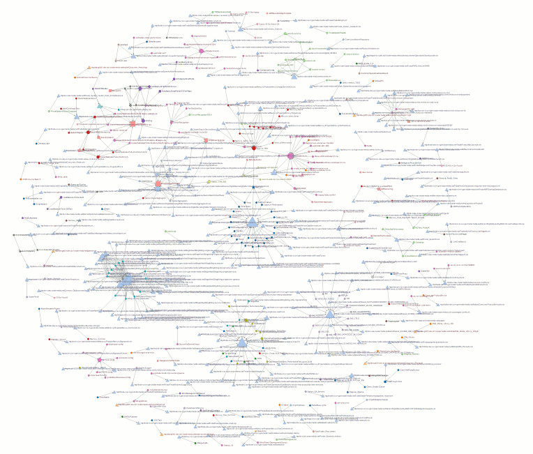

This is a tool to visualise the web of dependencies present in a large configuration of ThoughtWorks’ Go system for continuous delivery.

Circles represent pipelines,  squares represent pipeline templates, and triangles represent source code repositories. Arrows represent dependencies and the size of each shape grows with more incoming dependencies. Pipelines in the same groups are coloured similarly.
squares represent pipeline templates, and triangles represent source code repositories. Arrows represent dependencies and the size of each shape grows with more incoming dependencies. Pipelines in the same groups are coloured similarly.
How it works
It uses the excellent work of Mike Bostock on D3.js, adapted from a number of his examples (e.g. http://bl.ocks.org/mbostock/4062045).
It works by fetching the configuration XML over HTTP, either from the Configuration API (provided you are a logged in Go Admin) or from a supplied URL. It then extracts the declared dependencies into JSON and passes this to D3.js to be displayed as SVG. If you want to fetch directly from Go, then you should issue the Access-Control-Allow-Credentials: true header from your Go instance to ensure your browser is allowed to send your cookie credentials to Go. See here for more info about Cross Origin Resource Sharing.
Getting Started
Since it makes a cross origin request, you need to be looking at the HTML page via a web server. A shell script is included to quickly get a server running using Python: see start-http-server.sh.
Simply point the page at the configuration XML by supplying a configUrl parameter like this:
http://localhost:8081/pipeline-dependencies.html?configUrl=http://yourgoserver/go/admin/config_xml
It will default to the included sample.xml if you do not supply the parameter, to give you an idea of how it works.
Why?
I built this to see if it could help me understand how our organisation was using Go, and it proved very enlightening.
I also found it interesting to look at previous historical versions of the configuration, which you can get at using the Go configuration API provided you know the MD5 hash. If you don't, you can use git to query the configuration git repository on the server itself, using something like this:
git --git-dir=/data/go/db/config.git/.git/ log | tail -100
You can only go back as far as your upgrade to v2.2 though as that is when version control was brought in.
If, like me, yours does not fit on the screen, hit zoom out a few times and refresh the page.
Here is a link to an example built from our pipeline definitions.

What's next?
⊠ Specify XML location in parameter
⊠ Add code to allow Cross Origin Resource Sharing
⊠ Add arrowheads to indicate direction of dependency
⊠ ‘Compiled’ graphs with data in the URL (like Web Sequence Diagrams) to allow you to share without leaking config
⊠ Compress compiled dependency data to shorten the URL
⊠ Hiding of labels for sharing
◻ Replace ugly URL parsing with a decent library
◻ Fix bug where you can ‘show’ labels on a shared chart with no labels
◻ Links to pipelines from nodes
◻ Bendy connectors like this D3.js example
◻ Test Cross Origin Resource Sharing on a real Go server
◻ Provide obfuscated realistic example to play with
◻ Improve my butt ugly procedural JavaScript
◻ Use GitHub Pages to host the HTML file
◻ Super secret cool next idea